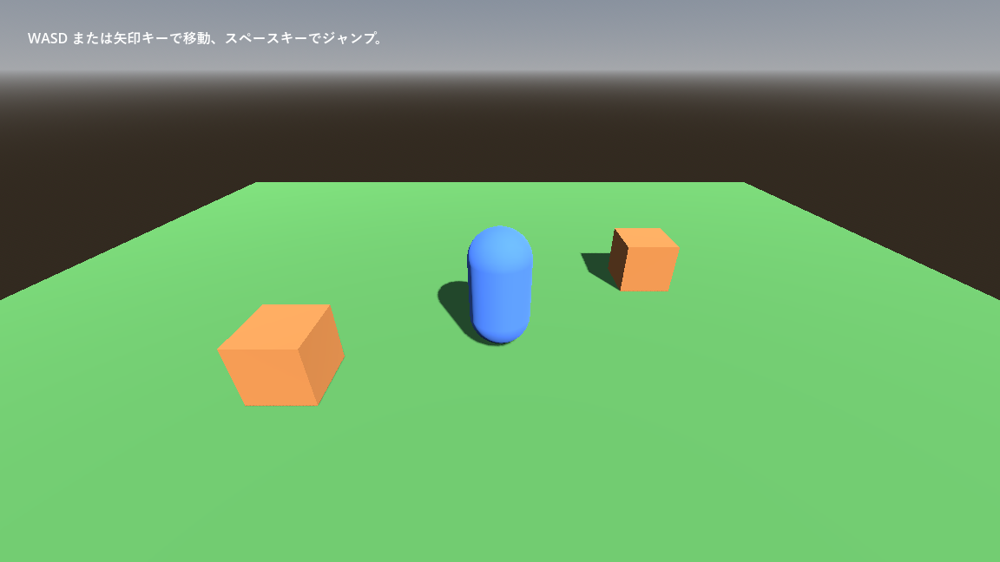

第 20 章 3D への入り口
本書はここまで 2D を扱ってきたが、ノードとシーン、スクリプト、シグナル、入力、物理といった考え方は 3D でもそのまま使える。本章では、2D との違いを中心に、3D のゲームを作るための最初の一歩を紹介する。サンプルは chapter20 フォルダーにある。
2D と 3D の違い
項目 |
2D |
3D |
|---|---|---|
基本のノード |
|
|
位置の型 |
|
|
単位 |
ピクセル |
メートル（慣習） |
上方向 |
Y がマイナス（下向きが正） |
Y がプラス（上向きが正） |
前方向 |
決まりはない |
Z がマイナスの向きが「前」。カメラや |
回転 |
1 つの角度（ |
3 つの軸のまわりの回転（ |
画面に映すもの |
カメラがなくても表示される。 |
|
見え方を決めるもの |
画像そのものの色 |
形状（メッシュ）、材質（マテリアル）、ライト、環境 |
2D と違って Y 軸が上向きである点に注意する。重力は Y のマイナス方向にかかり、ジャンプでは Y を増やす。
3D のシーンを構成する要素
3D のシーンには、少なくとも次の要素が必要である。
ノード、リソース |
役割 |
|---|---|
|
3D の形（メッシュ）を表示する。 |
|
物体の表面の質感を決める。「アルベド」（albedo、基本色）、「メタリック」（metallic、金属らしさ）、「ラフネス」（roughness、表面の粗さ）などを設定する。 |
|
太陽のように、一定の向きから全体を照らすライト。「シャドウ」→「有効」（shadow_enabled）をオンにすると影を落とす。ほかに、電球のような |
|
空の色、周囲からの光（環境光）、色調の補正など、シーン全体の環境を |
|
シーンを映すカメラ |
エディターの「3D」画面には、プレビュー用の太陽と空が仮に表示されるので、ライトや WorldEnvironment がなくても物体が見える。しかし、実行したゲームには反映されないので、実際のシーンには自分で配置する。
3D ビューポートの操作
操作 |
方法 |
|---|---|
視点を回転する |
マウスの中ボタンでドラッグする。 |
視点を平行移動する |
Shift を押しながら中ボタンでドラッグする。 |
拡大・縮小する |
マウスホイール |
飛び回るように移動する |
マウスの右ボタンを押したまま、W、A、S、D キーで移動する。 |
選んだノードを中央に表示する |
F |
サンプル
world_3d.tscn は、床と 2 つの箱がある空間を、カプセル形のプレイヤーが歩き回るサンプルである。


図 40 world_3d.tscn の実行結果
図 41 world_3d.tscn のノードの構成
3D の物理も、2D とほぼ同じ構成である。StaticBody3D、CharacterBody3D、RigidBody3D、Area3D があり、子に CollisionShape3D を置いて形を決める。床や箱は、StaticBody3D の子に見た目の MeshInstance3D と当たり判定の CollisionShape3D を置いている。カメラはプレイヤーの子にして、斜め後ろ上から見下ろす位置に置いた。
プレイヤーのスクリプトは、第 11 章 2D の物理と衝突 の 2D 版とほとんど同じである。
1extends CharacterBody3D
2## 3D 空間を歩くプレイヤー。2D 版（第 11 章）とほぼ同じ構造で書ける。
3
4const SPEED: float = 5.0 # 移動速度 [メートル/秒]
5const JUMP_VELOCITY: float = 4.5 # ジャンプの初速。3D では上方向が Y のプラス
6
7var gravity: float = ProjectSettings.get_setting("physics/3d/default_gravity")
8
9
10func _physics_process(delta: float) -> void:
11 if not is_on_floor():
12 velocity.y -= gravity * delta
13
14 if Input.is_action_just_pressed("jump") and is_on_floor():
15 velocity.y = JUMP_VELOCITY
16
17 # 2D の入力ベクトル (x, y) を、3D の水平面 (x, z) の移動方向に変換する。
18 var input := Input.get_vector("move_left", "move_right", "move_up", "move_down")
19 var direction := Vector3(input.x, 0.0, input.y)
20 velocity.x = direction.x * SPEED
21 velocity.z = direction.z * SPEED
22
23 move_and_slide()
2D 版との違いは次の点だけである。
速度が
Vector3である。重力で Y を減らし、ジャンプで Y を増やす（Y が上向きのため）。
入力の
Vector2の (x, y) を、水平面の (x, z) に割り当てている。move_upは画面の奥（-Z）、move_downは手前（+Z）に進む。重力は、プロジェクト設定の「物理」→「3D」にある「デフォルト重力」を使う。既定値は 9.8 メートル/秒² である。
3D モデルを読み込む
3D モデルは、Blender などの 3D モデリングツールで作り、ファイルとしてプロジェクトに置く。Godot は次の形式を読み込める。
形式 |
特徴 |
|---|---|
glTF 2.0（ |
推奨される形式。メッシュ、マテリアル、アニメーションをまとめて扱える。 |
Blender（ |
Blender がインストールされていれば、 |
FBX（ |
多くのツールが対応する形式 |
OBJ（ |
形状だけの単純な形式 |
読み込んだモデルはシーンとして扱われ、ファイルシステムドックからシーンにドラッグして配置できる。
3D で知っておきたいこと
レンダラー：本書のサンプルは互換性レンダラーを使っている。3D で高品質な表現（大域照明、ボリュームフォグなど）を使いたい場合は、Forward+ レンダラーに切り替える（第 3 章 環境構築）。
物理エンジン：3D の物理エンジンは、プロジェクト設定の「物理」→「3D」にある「物理エンジン」（physics/3d/physics_engine）で、Godot 独自のものと Jolt Physics を選べる。
回転：3D の回転は、
rotate_y()のように軸を指定して回す方法や、look_at()で目標の方向を向かせる方法を使うと扱いやすい。rotationの 3 つの値を直接操作すると、回転の順番の影響で思わぬ向きになることがある。素材の準備：3D のゲームは、2D よりも素材（モデル、テクスチャ、アニメーション）を用意する負担が大きい。最初は基本図形のメッシュだけで遊びの部分を作り、面白さを確かめてから素材を作り込むとよい。